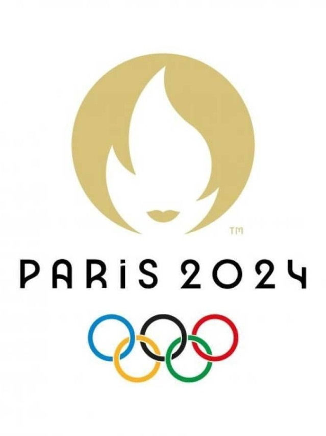
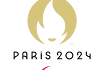
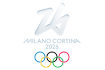
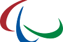

Jogos Olímpicos de Verão 2024
Os Jogos Olímpicos de Verão de 2024 serão realizados em Paris, França. Serão disputadas diversas modalidades esportivas, incluindo atletismo, natação, ginástica e muito mais. Jogos Olímpicos de 2024 (em francês: Les Jeux olympiques d'été de 2024), oficialmente denominados Jogos da XXXIII Olimpíada (em francês: Jeux de la XXXIIIe Olympiade) e comumente conhecidos como Paris 2024, serão um evento multiesportivo internacional programado para acontecer de 26 de julho a 11 de agosto de 2024 na França, com Paris como principal cidade anfitriã e 16 outras cidades espalhadas pela França Metropolitana, além de uma subsede no Taiti — uma ilha dentro do país ultramarino francês e da coletividade ultramarina da Polinésia Francesa.[3]

Jogos Paralímpicos de Verão 2024
Os Jogos Paralímpicos de Verão de 2024 também serão realizados em Paris, França. Os atletas disputarão em várias modalidades adaptadas, como basquete em cadeira de rodas, atletismo e natação. Os Jogos da XVII Paralimpíada, também chamados de Jogos Paralímpicos de 2024 ou mais comumente Paris 2024 (em francês: Jeux paralympiques d'été de 2024), será um evento multiesportivo dirigido à atletas com deficiência, organizado pelo Comitê Paralímpico Internacional (CPI) e com sede em Paris, na França. As eleições para as sedes dos Jogos Paralímpicos de 2024 e 2028 ocorreram em 2017, em Lima, capital do Peru, América do Sul.[1] Será a primeira vez em que Paris sedia os Jogos Paralímpicos, que agora contará com 22 desportos.

Jogos Olímpicos de Inverno 2026
Os Jogos Olímpicos de Inverno de 2026 ocorrerão em Milão e Cortina d'Ampezzo, Itália. Entre os esportes disputados estão esqui, snowboard, patinação no gelo e hóquei.
Os Jogos Olímpicos de Inverno de 2026, oficialmente denominados XXV Jogos Olímpicos de Inverno, e comumente conhecidos por Milão-Cortina 2026, serão um evento multiesportivo marcado para as cidades italianas de Milão e de Cortina d'Ampezzo, ambas no nordeste do país. Essa será a quarta edição dos Jogos Olímpicos a serem realizados na Itália. Antes dessas Olimpíadas, Cortina d'Ampezzo já havia sediado os Jogos Olímpicos de Inverno de 1956, a capital, Roma, sediou os Jogos Olímpicos de Verão de 1960 e Turim sediou os Jogos Olímpicos de Inverno de 2006. Historicamente, esta será a primeira vez em que duas cidades oficialmente serão as sedes dos Jogos Olímpicos, pois em diversas edições anteriores, existiram a sede principal e uma ou mais subsedes. Com isso, Cortina d'Ampezzo será a oitava cidade na história a sediar os Jogos por duas vezes, enquanto que esta será a primeira vez em que Milão sediará os Jogos Olímpicos, os quais serão realizados entre 6 e 22 de fevereiro de 2026.[1]

Paraolimpíadas de Inverno 2026
As Paraolimpíadas de Inverno de 2026 também ocorrerão em Milão e Cortina d'Ampezzo, Itália. Atletas disputarão modalidades adaptadas como esqui alpino, biatlo e curling. Os Jogos Paralímpicos de Inverno ou Jogos Paraolímpicos de Inverno são um evento multiesportivo internacional onde atletas com deficiência física competem. Isso inclui atletas com deficiência de mobilidade, amputações, cegueira e paralisia cerebral. Os Jogos Paralímpicos de Inverno são realizadas a cada quatro anos, logo após os Jogos Olímpicos de Inverno. Os Jogos Paralímpicos de Inverno também são hospedados pela cidade que sediou os Jogos Olímpicos de Inverno. O Comitê Paraolímpico Internacional (IPC) é responsável por supervisionar a competição. Medalhas são atribuídas em cada evento: medalhas de ouro para o primeiro lugar, prata para o segundo e bronze para o terceiro, seguindo a tradição começada nos Jogos Olímpicos de Verão de 1904.

Olimpíadas de Componentes Curriculares
As Olimpíadas de Componentes Curriculares abrangem diversas disciplinas como Matemática, Filosofia, Português, Ciências e outras, promovendo o conhecimento e a competição saudável entre estudantes. Como por exemplo A Olimpíada Brasileira de Astronomia e Astronáutica (OBA) é um evento nacional realizado nas escolas brasileiras previamente cadastradas desde 1998 pela Sociedade Astronômica Brasileira (SAB).[1] A partir de 2005 a Agência Espacial Brasileira (AEB) passou também a participar da organização, a olimpíada se tornou Olimpíada Brasileira de Astronomia e Astronáutica. A OBA é um evento aberto à participação de escolas públicas ou privadas, urbanas ou rurais, para alunos do primeiro ano do ensino fundamental até os do último ano do ensino médio. A OBA ocorre totalmente dentro da própria escola, tem uma única fase e é realizada dentro de um só ano letivo. A participação dos alunos é voluntária e não há obrigatoriedade de número mínimo ou máximo de alunos, ou seja, o número de alunos participantes não é determinado. Em 1999 participaram 15 mil estudantes. Já em 2011 foram mais de 800 mil.[2] Em 2021 a prova foi realizada em formato híbrido, devido à pandemia de COVID-19, e bateu o recorde de participantes, com 900 mil inscritos.[3] A empresa Furnas participou da organização da olimpíada em anos anteriores, como em 2013.[4]

Olimpíada Militar
A Olimpíada Militar reúne militares de diversos países em competições de habilidades físicas e técnicas, promovendo camaradagem e cooperação internacional. Os Jogos Mundiais Militares são um evento multidesportivo internacional que ocorre a cada quatro anos – sempre um ano antes das Olimpíadas. Ele é organizado pelo CISM, o Conselho Internacional do Desporto Militar, e voltado apenas para atletas das Forças Armadas. Atualmente, existem duas edições do evento: os Jogos Mundiais Militares de Verão e os Jogos Mundiais Militares de Inverno. Algumas das modalidades esportivas são exclusivas do meio militar e não são encontradas em outras competições! A última edição de verão, em 2019, contou com 109 países participantes, enquanto os Jogos Mundiais de Inverno tiveram 93 países. Origem dos Jogos Mundiais Militares Os Jogos foram inaugurados em 1995, na cidade italiana de Roma, em comemoração aos 50 anos do fim da Segunda Guerra Mundial – uma mensagem de paz dos representantes das Forças Armadas de todo o mundo. Já a edição de Inverno foram inaugurados anos depois, em 2010, no Vale da Aosta, também na Itália. Edições dos Jogos Mundiais Militares Ao todo, foram sete edições dos Jogos Mundiais Militares organizados pelo CISM, cada um deles sediado em um país diferente – inclusive no Brasil! Confira a seguir quais foram elas: 1995: 1o Jogos Mundiais Militares de Roma, Itália; 1999: 2o Jogos Mundiais Militares de Zagreb, Croácia; 2003: 3o Jogos Mundiais Militares de Catânia, Itália; 2007: 4o Jogos Mundiais Militares de Hyderabad, Índia; 2011: 5o Jogos Mundiais Militares do Rio de Janeiro, Brasil; 2015: 6o Jogos Mundiais Militares de Mungyeong, Coreia do Sul; e 2019: 7o Jogos Mundiais Militares de Wuhan, China.

Jogos dos Povos Indígenas
Os Jogos dos Povos Indígenas celebram a cultura e as tradições dos povos indígenas através de competições esportivas e atividades culturais. É um evento que promove a diversidade e a inclusão. Os Jogos dos Povos Indígenas é um evento multiesportivo, criado em 1996 por meio de uma iniciativa indígena brasileira, do Comitê Intertribal - Memória e Ciência Indígena (ITC), com o apoio do Ministério do Esporte do Brasil. Sendo um dos maiores encontros esportivos culturais de indígenas da América.[1] O primeiro foi realizado em Goiânia, capital do estado de Goiás. Em 2015, o evento tem sua primeira edição mundial e se torna Jogos Mundiais dos Povos Indígenas. Os líderes indígenas Carlos Terena e Marcos Terena, fundadores do ITC, foram os responsáveis pela organização desportiva, cultural, espiritual e a articulação com os povos indígenas. No total já reuniram mais de 150 povos indígenas brasileiros, tais como Xavante, Bororo, Pareci, Guarani. Inclusive houve delegações estrangeiras indígenas vindas do Canadá e da Guiana Francesa.